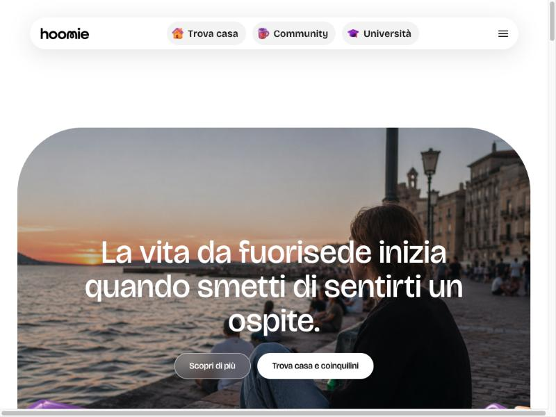

Siti web e presenza online
Siti vetrina, landing page e web app su misura: veloci, ottimizzati per Google e gestibili in autonomia. Anche rifacimento di siti datati.
Sviluppo Software e Consulenza IT · Cuneo
Sono co-founder e CTO di Hoomie, dove ho costruito sito, app e infrastruttura. Progetto e sviluppo siti e web app, realizzo gestionali su misura e aiuto studi professionali e piccole imprese del Cuneese a far funzionare — e mettere in sicurezza — la loro tecnologia.
Tre servizi per attività e studi del Cuneese — più lo sviluppo prodotto per chi parte da un'idea.
Siti vetrina, landing page e web app su misura: veloci, ottimizzati per Google e gestibili in autonomia. Anche rifacimento di siti datati.
Computer, reti, posta, backup e sicurezza per studi professionali e PMI. Interventi da remoto e in sede, con continuità operativa.
Software e automazioni per semplificare il lavoro quotidiano: registri, pratiche, flussi ripetitivi e integrazioni tra gli strumenti che già usi.
App per iOS e Android: dal prototipo alla pubblicazione sugli store, con backend e notifiche.
Scelte tecnologiche, architettura e infrastruttura per lanciare un MVP senza sprecare budget.
Alcuni progetti a cui ho lavorato.

Hoomie aiuta studenti e lavoratori fuorisede a trovare casa e coinquilini compatibili, e a vivere la città attraverso una community. Mi occupo dell'intera parte tecnica: analisi, sviluppo e infrastruttura della piattaforma.
Sviluppo in Objective-C delle funzioni per condividere la propria posizione durante le videochiamate su iPhone.
Gestione completa dell'infrastruttura di uno studio che tratta dati sensibili dei condòmini: postazioni, rete, backup, posta e licenze Microsoft 365, con attenzione a sicurezza e continuità operativa. Un unico referente tecnico.
Riordino della gestione IT: utenze e licenze software, DNS sicuro a protezione della rete e revisione dell'hardware, per una manutenzione più prevedibile.
Analisi e sviluppo software e web della piattaforma Hoomie: prodotto e infrastruttura.
Informatica, Sistemi e Reti, Tecnologie Informatiche, Matematica e Fisica.
Assistenza informatica per uno studio di amministrazione condominiale.
Gestione utenti, licenze software, DNS sicuro e manutenzione hardware.
Tirocinio: funzioni di condivisione della posizione in un'app di videochat.
Montaggio e gestione di impianti luci e audio per concerti e spettacoli.
Percorso di formazione e pre-accelerazione per startup innovative.
Scrivimi per un preventivo o anche solo per parlare di un'idea.